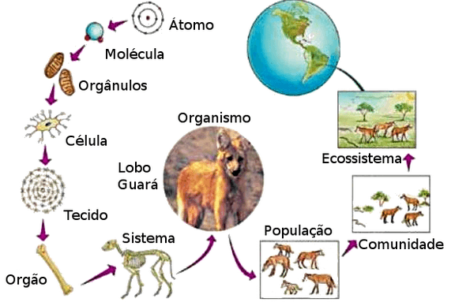
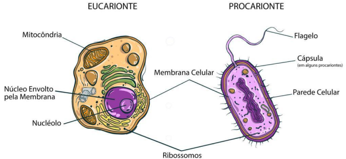

ORGANISMO

O QUE É UM ORGANISMO?
Um ORGANISMO , na biologia, é um indivíduo completo e funcional de uma espécie, capaz de realizar todas as funções vitais necessárias para sua sobrevivência. Podem ser unicelulares, como bactérias e protozoários, ou multicelulares, como plantas, animais e fungos.

CARACTERÍSTICAS
Algumas das características presentes nos seres vivos são acapacidade de reprodução, de evolução, presença de metabolismo, resposta a estímulos, presença de célula e material genético.
ORGANIZAÇÃO CELULAR
Todo organismo é constituído pela unidade básica da vida: a célula. A célula é uma estrutura delimitada por membrana e que contém em seu interior citoplasma e material genético (DNA). Os seres vivos podem ser formados por uma única célula (unicelulares) ou várias células (multicelulares). Além disso, eles podem ser procariontes ou eucariontes: Procariontes:células pequenas e simples que não possuem núcleo definido, seu DNA é circular e fica disperso no citoplasma, não apresenta organelas membranosas, tem ribossomos menores e menos complexos. Ex: bactérias e cianobactérias. Eucariontes:células maiores e mais complexas que possuem núcleo organizado, seu DNA é linear e encontra-se no interior do núcleo, apresenta organelas membranosas (mitocôndria, complexo de golgi, entre outras). Ex: animais, vegetais, fungos e protistas.
MATERIAL PARA ESTUDO

Mapa Mental
Biologia com Samuel Cunha (Vídeo Aula)